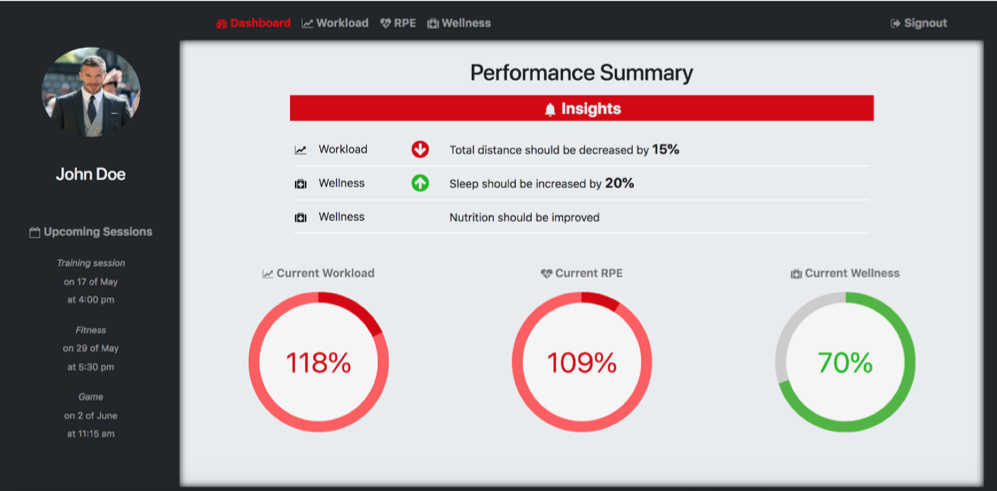

ATHLETE DASH
This studio project was for a local industry based client who required a responsive web based athlete monitoring dashboard. Key emphasis is to be placed on the insights section as well as ensuring it caters for a range of athletes.
Technologies used for this project: HTML5, CSS3, JS, REACT, REACTSTRAP
User Interface / User Experience Design

The key to this design was to ensure a simple clean dashboard which provided an overview for the athlete yet still provide the ability to see further detail / information if required.